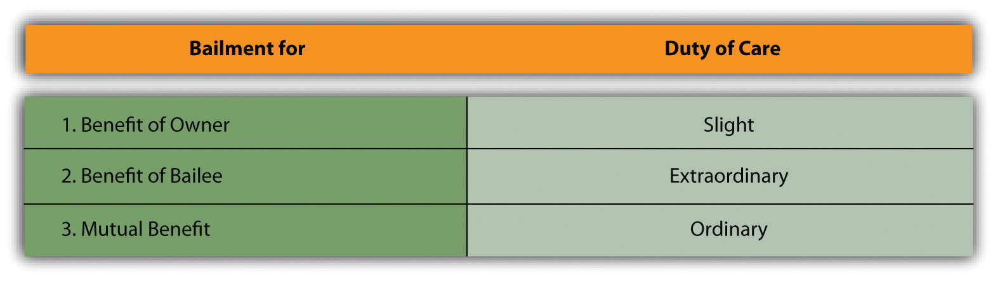

The basic rule is that the bailee is expected to return to its owner the bailed goods when the bailee’s time for possession of them is over, and he is presumed liable if the goods are not returned. But that a bailee has accepted delivery of goods does not mean that he is responsible for their safekeeping no matter what. The law of bailments does not apply a standard of absolute liability: the bailee is not an insurer of the goods’ safety; her liability depends on the circumstances.
Some courts say that the bailee’s liability is the straightforward standard of “ordinary care under the circumstances.” The question becomes whether the bailee exercised such care. If she did, she is not liable for the loss.
Most courts use a complex (some say annoying) tripartite division of responsibility. If the bailment is for the sole benefit of the owner (the bailor), the bailee is answerable only for gross neglect or fraud: the duty of care is slight. For example, imagine that your car breaks down on a dark night and you beg a passing motorist to tow it to a gas station; or you ask your neighbor if you can store your utility trailer in her garage.
On the other hand, if the goods are entrusted to the bailee for his sole benefit, then he owes the bailor extraordinary care. For example, imagine that your neighbor asks you to let him borrow your car to go to the grocery store downtown because his car is in the shop; or a friend asks if she can borrow your party canopy.
If the bailment is for the mutual benefit of bailee and bailor, then the ordinary negligence standard of care will govern. For example, imagine you park your car in a commercial parking lot, or you take your suit jacket to a dry cleaner (see Figure 21.1 "Duty of Care").
Figure 21.1 Duty of Care
One problem with using the majority approach is the inherent ambiguity in the standards of care. What constitutes “gross” negligence as opposed to “ordinary” negligence? The degree-of-care approach is further complicated by the tendency of the courts to take into account the value of the goods; the lesser the value of the goods, the lesser the obligation of the bailee to watch out for them. To some degree, this approach makes sense, because it obviously behooves a person guarding diamonds to take greater precautions against theft than one holding three paperback books. But the value of the goods ought not to be the whole story: some goods obviously have great value to the owner, regardless of any lack of intrinsic value.
Another problem in using the majority approach to the standard of care is determining whether or not a benefit has been conferred on the bailee when the bailor did not expressly agree to pay compensation. For example, a bank gives its customers free access to safe-deposit boxes. Is the bank a “gratuitous bailee” that owes its bailor only a slight degree of care, or has it made the boxes available as a commercial matter to hold onto its customers? Some courts cling to one theory, some to the other, suggesting the difficulty with the tripartite division of the standard of care. However, in many cases, whatever the formal theory, the courts look to the actual benefits to be derived. Thus when a customer comes to an automobile showroom and leaves her car in the lot while she test-drives the new car, most courts would hold that two bailments for mutual benefit have been created: (1) the bailment to hold the old car in the lot, with the customer as the bailor; and (2) the bailment to try out the new car, with the customer as the bailee.
In a bailment case, the plaintiff bailor has the burden of proving that a loss was caused by the defendant bailee’s failure to exercise due care. However, the bailor establishes a prima facie (“at first sight”—on first appearance, but subject to further investigation) case by showing that he delivered the goods into the bailee’s hands and that the bailee did not return them or returned them damaged. At that point, a presumption of negligence arises, and to avoid liability the defendant must rebut that presumption by showing affirmatively that he was not negligent. The reason for this rule is that the bailee usually has a much better opportunity to explain why the goods were not returned or were returned damaged. To put this burden on the bailor might make it impossible for him to win a meritorious case.
As might be expected, most bailment cases involve the legal liability of bailees. However, a body of law on the liability of bailors has emerged.
A bailor may be held liable for negligence. If the bailor receives a benefit from the bailment, then he has a duty to inform the bailee of known defects and to make a reasonable inspection for other defects. Suppose the Tranquil Chemical Manufacturing Company produces an insecticide that it wants the Plattsville Chemical Storage Company to keep in tanks until it is sold. One of the batches is defectively acidic and oozes out of the tanks. This acidity could have been discovered through a routine inspection, but Tranquil neglects to inspect the batch. The tanks leak and the chemical builds up on the floor until it explodes. Since Tranquil, the bailor, received a benefit from the storage, it had a duty to warn Plattsville, and its failure to do so makes it liable for all damages caused by the explosion.
If the bailor does not receive any benefit, however, then his only duty is to inform the bailee of known defects. Your neighbor asks to borrow your car. You have a duty to tell her that the brakes are weak, but you do not need to inspect the car beforehand for unknown defects.
The theory of products liability discussed in Chapter 20 "Products Liability" extends to bailors. Both warranty and strict liability theories apply. The rationale for extending liability in the absence of sale is that in modern commerce, damage can be done equally by sellers or lessors of equipment. A rented car can inflict substantial injury no less than a purchased one.
In several states, when an automobile owner (bailor) lends a vehicle to a friend (bailee) who causes an accident, the owner is liable to third persons injured in the accident. This liability is discussed in Chapter 38 "Relationships between Principal and Agent", which covers agency law.
Bailees frequently attempt to disclaim their liability for loss or damage. But courts often refuse to honor the disclaimers, usually looking to one of two justifications for invalidating them.
The disclaimer must be brought to the attention of the bailor and must be unambiguous. Thus posted notices and receipts disclaiming or limiting liability must set forth clearly and legibly the legal effects intended. Most American courts follow the rule that the defendant bailee must show that the bailor in fact knew about the disclaimer. Language printed on the back side of a receipt will not do.
Even if the bailor reads the disclaimer, some courts will nevertheless hold the bailee liable on public policy grounds, especially when the bailee is a “business bailee,” such as a warehouse or carrier. Indeed, to the extent that a business bailee attempts to totally disclaim liability, he will probably fail in every American jurisdiction. But the Restatement (Second) of Contracts, Section 195(2)(b), does not go quite this far for most nonbusiness bailees. They may disclaim liability as long as the disclaimer is read and does not relieve the bailee from wanton carelessness.
Bailors most frequently attempt to disclaim liability in rental situations. For example, in Zimmer v. Mitchell and Ness, the plaintiff went to the defendant’s rental shop at the Camelback ski area to rent skis, boots, and poles.Zimmer v. Mitchell and Ness, 385 A.2d 437 (Penn. 1978). He signed a rental agreement before accepting the ski equipment. He was a lessee and a bailee. Later, while descending the beginners’ slope, he fell. The bindings on his skis did not release, thereby causing him to sustain numerous injuries. The plaintiff sued the defendant and Camelback Ski Corporation, alleging negligence, violation of Section 402A of the Restatement (Second) of Torts, and breach of warranty. The defendant filed an answer and claimed that the plaintiff signed a rental agreement that fully released the defendant from liability. In his reply, the plaintiff admitted signing the agreement but generally denied that it released the defendant from liability. The defendant won on summary judgment.
On appeal, the Pennsylvania Supreme Court held for the defendant and set out the law: “The test for determining the validity of exculpatory clauses, admittedly not favored in the law, is set out in [Citation]. The contract must not contravene any policy of the law. It must be a contract between individuals relating to their private affairs. Each party must be a free bargaining agent, not simply one drawn into an adhesion contract, with no recourse but to reject the entire transaction.…We must construe the agreement strictly and against the party asserting it [and], the agreement must spell out the intent of the parties with the utmost particularity.” The court here was satisfied with the disclaimer.
If the bailor hires the bailee to perform services for the bailed property, then the bailee is entitled to compensation. Remember, however, that not every bailment is necessarily for compensation. The difficult question is whether the bailee is entitled to compensation when nothing explicit has been said about incidental expenses he has incurred to care for the bailed property—as, for example, if he were to repair a piece of machinery to keep it running. No firm rule can be given. Perhaps the best generalization that can be made is that, in the absence of an express agreement, ordinary repairs fall to the bailee to pay, but extraordinary repairs are the bailor’s responsibility. An express agreement between the parties detailing the responsibilities would solve the problem, of course.
Lien is from the French, originally meaning “line,” “string,” or “tie.” In law a lienAn encumbrance upon property to secure payment. is the hold that someone has over the property of another. It is akin, in effect, to a security interest. A common type is the mechanic’s lienA claim allowed to one who furnishes labor, services, or materials to improve property. (“mechanic” here means one who works with his hands). For example, a carpenter builds a room on your house and you fail to pay him; he can secure a lien on your house, meaning that he has a property interest in the house and can start foreclosure proceedings if you still fail to pay. Similarly, a bailee is said to have a lien on the bailed property in his possession and need not redeliver it to the bailor until he has been paid. Try to take your car out of a parking lot without paying and see what happens. The attendant’s refusal to give you the car is entirely lawful under a common-law rule now more than a century and a half old. As the rule is usually stated, the common law confers the lien on the bailee if he has added value to the property through his labor, skill, or materials. But that statement of the rule is somewhat deceptive, since the person who has simply housed the goods is entitled to a lien, as is a person who has altered or repaired the goods without measurably adding value to them. Perhaps a better way of stating the rule is this: a lien is created when the bailee performs some special benefit to the goods (e.g., preserving them or repairing them).
Many states have enacted statutes governing various types of liens. In many instances, these have broadened the bailee’s common-law rights. This book discusses two types of liens in great detail: the liens of warehousemen and those of common carriers. Recall that a lease creates a type of bailment: the lessor is the bailor and the lessee is the bailee. This book references the UCC’s take on leasing in its discussion of the sale of goods.Uniform Commercial Code, Section 2A.
The general rule is that the bailee can recover damages in full if the bailed property is damaged or taken by a third party, but he must account in turn to the bailor. A delivery service is carrying parcels—bailed goods entrusted to the trucker for delivery—when the truck is struck from behind and blows up. The carrier may sue the third person who caused the accident and recover for the total loss, including the value of the packages. The bailor may also recover for damages to the parcels, but not if the bailee has already recovered a judgment. Suppose the bailee has sued and lost. Does the bailor have a right to sue independently on the same grounds? Ordinarily, the principle of res judicata would prevent a second suit, but if the bailor did not know of and cooperate in the bailee’s suit, he probably has the right to proceed on his own suit.
The liability of an innkeeper—a type of bailor—is thought to have derived from the warlike conditions that prevailed in medieval England, where brigands and bandits roamed the countryside and the innkeeper himself might not have been above stealing from his guests. The innkeeper’s liability extended not merely to loss of goods through negligence. His was an insurer’s liability, extending to any loss, no matter how occasioned, and even to losses that occurred in the guest’s room, a place where the guest had the primary right of possession. The only exception was for losses due to the guest’s own negligence.
Most states have enacted statutes providing exceptions to this extraordinarily broad common-law duty. Typically, the statutes exempt the hotel keeper from insurer’s liability if the hotelier furnishes a safe in which the guests can leave their jewels, money, and other valuables and if a notice is posted a notice advising the guests of the safe’s availability. The hotelier might face liability for valuables lost or stolen from the safe but not from the rooms.
If the bailee fails to redeliver the goods to the bailor, a presumption of negligence arises, but the bailee can rebut the presumption by showing that she exercised appropriate care. What is “appropriate care” depends on the test used in the jurisdiction: some courts use the “ordinary care under the circumstances,” and some determine how much care the bailee should have exercised based on the extent to which she was benefited from the transaction compared to the bailor. The bailor can be liable too for negligently delivering goods likely to cause damage to the bailee. In either case reasonable disclaimers of liability are allowed. If the bailed goods need repair while in the bailee’s possession, the usual rule is that ordinary repairs are the bailee’s responsibility, extraordinary ones the bailor’s. Bailees are entitled to liens to enforce payment owing to them. In common law, innkeepers were insurers of their guests’ property, but hotels and motels today are governed mostly by statute: they are to provide a safe for their guests’ valuables and are not liable for losses from the room.